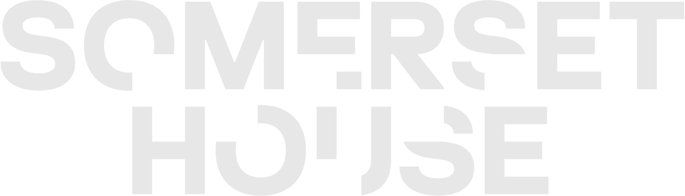

홈 > 브랜드 매거진 > 아가방앤컴퍼니
아가방앤컴퍼니 Agabang & Company
1974년 창업한 국내 대표 유아복·유아용품 브랜드
산업 분야 미디어·엔터테인먼트 · 공개 등급 자료 기반 · 브랜드 평가 4 ★
AG
아가방앤컴퍼니
한눈에 보는 브랜드
1974년 유아복 전문 업체로 창업해 아가방이라는 브랜드로 유아복 시장에 자리잡았다. 이후 유아용품 전반으로 사업을 확장하며 아가방앤컴퍼니로 사명을 정비했다.
국내 유아복 시장의 성장과 함께 매장망을 넓혀갔다. 2015년에는 애경그룹이 최대주주로 편입되며 지배구조가 변화했다.
브랜드 아이덴티티
산업화 시대에 창업한 제조 기반 유아복 기업이 이후 대기업 계열로 편입되며 지배구조를 재편한 사례로, 전통 브랜드의 소유권 이전 패턴을 보여준다. 유아복·유아용품 전문성을 기반으로 백화점·전문점 유통망을 확대하며 성장했다.
타임라인
자주 묻는 질문
아가방앤컴퍼니는 언제 설립되었나요?
아가방앤컴퍼니는 1974년 설립되었습니다.
아가방앤컴퍼니의 브랜드 아이덴티티는 무엇인가요?
산업화 시대에 창업한 제조 기반 유아복 기업이 이후 대기업 계열로 편입되며 지배구조를 재편한 사례로, 전통 브랜드의 소유권 이전 패턴을 보여준다.
함께 읽을 브랜드

미디어·엔터테인먼트 · 편집 검수Somerset House서머셋 하우스는 런던 스트랜드의 템스강변에 자리한 신고전주의 역사 건축물을 기반으로 운영되는 문화예술기관이다. 1997년 서머셋 하우스 트러스트가 설립되면서 정부 청...
BM
보령메디앙스
미디어·엔터테인먼트 · 자료 기반보령메디앙스보령제약그룹 계열의 유아 스킨케어·용품 전문 기업
De
Den Kongelige Samling
미디어·엔터테인먼트 · 편집 검수Den Kongelige SamlingDen Kongelige Samling는 2025년에 기록된 Museums, Galleries & Libraries 계열의 브랜드 아이덴티티 사례입니다. Kontra...
Et
Eternal Research
미디어·엔터테인먼트 · 편집 검수Eternal ResearchEternal Research는 2025년에 기록된 Sound 계열의 브랜드 아이덴티티 사례입니다. Cotton가 아이덴티티 작업의 디자이너로 기록되어 있습니다. 공...
Ex
Expo '90
미디어·엔터테인먼트 · 편집 검수Expo '90Expo '90는 1987년에 기록된 World Expos 계열의 브랜드 아이덴티티 사례입니다. Mitsuo Katsui가 아이덴티티 작업의 디자이너로 기록되어 있습...
Ex
Expo 85
미디어·엔터테인먼트 · 편집 검수Expo 85Expo 85는 1981년에 기록된 World Expos 계열의 브랜드 아이덴티티 사례입니다. Ikko Tanaka가 아이덴티티 작업의 디자이너로 기록되어 있습니다....
 미디어·엔터테인먼트 · 편집 검수MASP
미디어·엔터테인먼트 · 편집 검수MASPMASP는 2025년에 기록된 Museums, Galleries & Libraries 계열의 브랜드 아이덴티티 사례입니다. Porto Rocha가 아이덴티티 작업의...
Ma
MassiveMusic
미디어·엔터테인먼트 · 편집 검수MassiveMusicMassiveMusic는 2025년에 기록된 Sound 계열의 브랜드 아이덴티티 사례입니다. Koto가 아이덴티티 작업의 디자이너로 기록되어 있습니다. 공개 섹션 정...